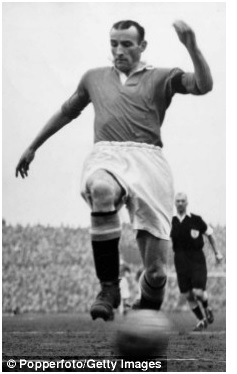
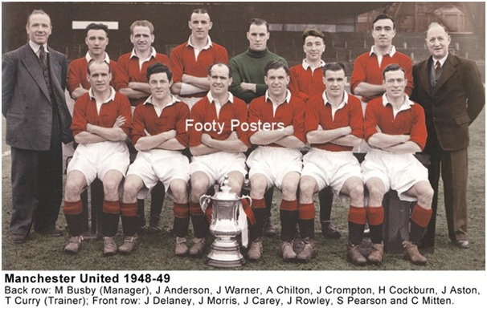

Chương 8

hừa hưởng đội hình mạnh từ Walter Crickmer, Busby không phải bổ sung lực lượng gì nhiều. Nhưng vừa đến Old Trafford, ông bán ngay những cầu thủ không phù hợp như Jack Smith và Bill Brytant, cùng lúc thực hiện sự điều chỉnh chiến thuật quan trọng: Kéo đội trưởng Johnny Carey từ vị trí tiền vệ công xuống chơi hậu vệ. Đây là điều chỉnh hết sức hiệu quả: Từ một tiền vệ công kha khá, Carey trở thành hậu vệ vĩ đại.
3 mùa liền, từ 1946-1947 đến 1948-1949, Manchester United giành ngôi á quân giải Hạng Nhất. Về nhì liên tục hẳn cũng thất vọng, song so với phong độ kém cỏi những năm tiền chiến, thành tích như vậy đã là rất khả quan. Đặc biệt, mùa 1947-1948, CLB xuất sắc đoạt Cúp FA, danh hiệu lớn đầu tiên kể từ 1911.
Mang thân phận “ăn nhờ ở đậu”, United thường xuyên gặp bất lợi tại Cúp FA. Vì các trận đấu cúp này đều diễn ra cùng ngày, nếu lá thăm run rủi khiến City và United cùng được đá trên sân nhà, Man đỏ sẽ phải nhường Maine Road cho Man xanh, đi thuê một sân khác. Năm 1948, United lần lượt phải đá với Liverpool tại “sân nhà” Goodison Park, rồi Charlton tại “sân nhà” Huddersfield. Vượt qua cả hai, đến vòng tứ kết, đội mới được tiếp Preston ở Main Road, bởi lúc này City đã bị loại. Stan Pearson lập cú đúp vào lưới Preston, giúp đội nhà chiến thắng 4-2, sau đó ghi một hattrick trong trận hạ Derby 3-1 ở bán kết. Đối thủ của United trong trận chung kết vào tháng tư là Blackpool.
Blackpool không mạnh lắm, nhưng sở hữu Stanley Matthews, người kế thừa ngai vàng vua bóng đá từ Billy Meredith. Matt Busby ngán Matthews đến nỗi ông chỉ đạo cả tiền vệ John Anderson lẫn tiền đạo Charlie Mitten phải theo kèm huyền thoại này, hỗ trợ cho các hậu vệ. Thế là thay vì tấn công, Mitten phải kè kè bám theo Matthews, thường xuyên bị Matthews cho ngửi khói. “Charlie, chú cứ theo đuôi anh như thế thì còn làm ăn gì được”, Mattthews chế giễu, “Cút mẹ nó lên trên coi nào”.Kết thúc 45 đầu tiên, Blackpool gác 2-1.
Matt Busby kịp thời nhận ra sai lầm: Dẫu tài năng siêu việt, Matthews chỉ là cầu thủ chạy cánh; Harry Johnston mới là người cầm chịch thế trận của Blackpool, bóng đến chân Matthews chủ yếu do Johnston "tiếp đạn". Thay vì cho kèm Matthews, vì kèm cũng không nổi, Busby chỉ đạo Henry Cockburn bám sát Johnston. Quả nhiên, thế trận đổi chiều trong hiệp hai. Rowley gỡ hòa cho United, rồi Pearson và Anderson lần lượt ghi bàn, ấn định tỷ số 4-2[1].
Sau ngày đăng quang, các cầu thủ United được thưởng mỗi người…20 bảng! Ai nấy đều thất vọng: Bọn Derby được treo thưởng đến 100 bảng nếu lọt vào chung kết, còn chúng mình đoạt cúp hẳn hoi, thế mà…Lương cơ bản cầu thủ là 12 bảng mỗi tuần, 20 bảng tức chưa đầy hai tuần lương, trong khi số tiền BLĐ thưởng cho HLV Matt Busby là 1750! Đó là chưa nói đến chuyện Busby sắp ký hợp đồng mới, với mức lương “khủng” 3250 bảng/năm.

Johnny Carey nhận cúp FA (Ảnh: Thejournal.ie)
Bàn đi tính lại, mọi người quyết định cử Johnny Morris và Henry Cockburn đến gặp Busby thương lượng chuyện tiền nong. Dẫu thông cảm với cầu thủ, Busby chỉ ra rằng chuyện lương-thưởng do FA quy định, tất cả đều có mức trần, ông muốn trả hơn cũng không được. Các CLB khác vung tiền bừa bãi đều là trái luật, không thể thấy thế mà làm theo. Ông nhắc thêm: Để bù đắp mức lương, đội đã giành cho cầu thủ rất nhiều ưu đãi: Nào là vé xem phim miễn phí, chơi golf miễn phí, ăn nhà hàng miễn phí, du lịch miễn phí. Cầu thủ nào lập gia đình, còn được cấp nhà riêng. Đó không phải thưởng thì là gì?
Nghe giải thích xong,các cầu thủ vẫn không hài lòng; gì thì gì, họ vẫn thích tiền mặt hơn. Yên được một dạo, họ lại cử Morris, lần này đi cùng thủ quân Carey, đến gặp Busby thêm lần nữa, sau đó qua mặt Busby, tới nói chuyện thẳng với BLĐ CLB. Yêu sách không được đáp ứng, họ thậm chí lập kế hoạch đình công. Cho rằng Morris là kẻ đầu têu, Busby định đẩy anh đi. Tuy vậy, ông vẫn còn phân vân, bởi phong độ của Morris trên sân luôn rất tốt. Thêm vào đó, anh mới 24, trẻ hơn các cựu binh thế hệ 1939. Không lẽ lại bán đi tương lai của CLB?
Song cây muốn lặng mà gió chẳng dừng. Tháng 3,1949, sau khi bình phục chấn thương, Morris được Busby đưa xuống đội dự bị để lấy lại cảm giác bóng. Anh ra sân, đứng chơi không thèm tập, nên bị thầy la.
-Đá cho đội dự bị thì tập làm cái gì? Morris càu nhàu, đoạn quay lưng bỏ đi.
-Cậu mà bước khỏi sân này thì đừng bao giờ trở lại nữa – Busby bất bình.
Nhưng Morris vẫn đi, không ngoái đầu, còn Busby vào ngay văn phòng, thảo thông báo rao bán anh. Morris chuyển sang Derby, với giá chuyển nhượng kỷ lục thế giới 24500 bảng, và phí lót tay là một… cửa hàng thuốc lá. Cũng từ đó, sự nghiệp của anh tuột luôn xuống dốc. Sau này nhớ lại, Morris thừa nhận lúc nào cũng nhớ United khôn nguôi, tuy Derby trả lương cao hơn rất nhiều.
“Matt là thần bảo hộ của United”, Wilf McGuinness nhận định, “Với ông, chỉ có CLB là quan trọng nhất. Johnny Morris, Charlie Mitten, George Best hay Denis Law đều là cầu thủ lớn cả đấy, duy không ai được quyền lớn hơn CLB.”
Morris không phải vấn đề duy nhất Busby phải đối mặt, vì cùng thời điểm, Manchester City cũng bắn tin, nhắn United mau mau thu xếp, dọn khỏi Maine Road. Tuy mỗi năm nhận tiền thuê 5000, lại được chia lời từ tiền vé, Man xanh vẫn ngán tận cổ việc chung đụng với “kẻ thù”. Old Trafford lúc ấy chưa trùng tu xong, phần mái che chưa có, nhưng United không thể đợi được nữa. Thứ tư, ngày 24 tháng 8, 1949, trước 42000 khán giả, đội đón tiếp Bolton, trong trận đấu chính thức đầu tiên trên sân nhà từ 1939. Trong hai mùa kế đó, CĐV trận nào cũng phải ngồi sân không mái, chịu gió chịu mưa, song chẳng ai nề hà: Dù thế nào đi nữa, ta về ta tắm ao ta vẫn hơn[2].
Trở về mái nhà xưa, United trải qua một mùa 1949-1950 kỳ lạ. Đội khởi đầu rất tốt, giành những trận thắng kinh hoàng, như 6-0 trước Huddersfield (Pearson và Rowley cùng lập cú đúp), 7-0 trước Aston Villa (Mitten ghi 4 bàn). Khi còn mười vòng nữa kết thúc giải, các chàng trai của Busby vững vàng trên ngôi đầu, với 4 điểm nhiều hơn Liverpool. Vậy mà không hiểu trúng phải “bùa ngải” gì, trong 10 trận cuối đó, họ thắng được duy nhất một trận, từ hạng nhất rơi xuống tận hạng tư! Đau hơn bò đá!
Để xả xui, Busby đưa United sang Mỹ du đấu mùa hè[3], không ngờ xui càng xui dữ. Tại New York, tiền đạo Charlie Mitten tình cờ gặp Neil Franklin, cựu cầu thủ Stoke, nay đang thi đấu cho Santa Fe của Colombia. Franklin rủ Mitten sang Nam Mỹ chơi bóng cùng mình, cho biết Santa Fe sẵn sàng trả anh mức lương 40 bảng mỗi tuần, chưa kể tiền thưởng, cộng thêm 5000 bảng phí lót tay, những con số có mơ cũng không thấy ở United. Kết thúc chuyến du đấu, thay vì về nước cùng đồng đội, Mitten báo cho Busby biết anh sẽ bay sang Colombia ký hợp đồng.
“Họ trả nhiều tiền thế à?”, Busby cười, “Thế họ có cần HLV không, để tôi đi luôn? Nếu cậu đã nhất quyết thì cứ đi, nhưng phải cân nhắc cho kỹ đã nhé.”
Busby tự tin Mitten sẽ phải quay về, vì anh đang còn hợp đồng với United, đâu phải muốn đi thì đi. Thế nhưng, ông không biết một điều: Santa Fe là một CLB “nổi loạn”. Họ cùng một số CLB lớn khác đã tách ra khỏi LĐBĐ Colombia, thoát ly sự kiểm soát của FIFA, để thành lập giải VĐQG riêng. Vì Santa Fe nằm ngoài tầm FIFA, United không có cách nào buộc Mitten tuân thủ hợp đồng, đành chịu mất trắng tiền đạo tài năng này. Nguy hiểm hơn nữa, hai cầu thủ khác của United, John Aston và Henry Cockburn, đang dự World Cup cùng ĐTQG Anh ở Brazil, cũng bị các CLB Colombia mon men sang dụ dỗ. May mà Busby thuyết phục được cả hai ở lại.
Mấy năm “nổi loạn”, một mình một cõi, từ 1949 đến 1954, được coi là thời đại vàng son trong lịch sử giải VĐQG Colombia. Chịu vung tiền trả lương cao, những Santa Fe, Millonarios, Deportivo Cali…thu hút được nhân tài từ khắp tứ phương thiên hạ: Neil Franklin, Charlie Mitten của Anh; Tim, Heleno de Freitas của Brazil; Laslo Szoke; Bela Sarosi của Hungary, và sáng giá nhất: “mũi tên vàng” Alfredo di Stefano của Argentina. Nhưng lương cao mặc lòng, Charlie Mitten không thích ứng được với cuộc sống nơi xứ lạ quê người. Chỉ sau sáu tháng, vợ và con anh đã khăn gói về lại Manchester. Bản thân Mitten chỉ trụ lại được một năm, rồi cũng quay về.
Đương nhiên, án phạt chờ đón Mitten tại Anh. FA ra thông cáo treo giò anh sáu tháng vì tội vô kỷ luật. Busby cũng không muốn nhận lại “kẻ phản bội”. Tháng 12, 1951, anh bị bán sang Fulham.
Không Mitten, United không yếu đi, bởi Jack Rowley “một mình làm việc bằng hai”, liên tục ghi bàn như súng liên thanh nhả đạn. Mùa 1951-1952, đội thắng như chẻ tre trong hai tháng đầu, khựng lại vào tháng 11, rồi lấy lại phong độ, giữ vững ngôi đỉnh bảng trong nửa sau mùa giải. Trước vòng cuối cùng gặp đội hạng nhì Arsenal tại Old Trafford, United gần như chắc chắn vô địch, do họ dẫn trước Arsenal hai điểm và có số trung bình bàn thắng cao hơn. Muốn đăng quang, Pháo Thủ cần thắng ít nhất…7-0!
Tỷ số cuối cùng là 6-1, nhưng nghiêng về United. Jack Rowley mở tỷ số ngay từ phút thứ 8, Stan Pearson và Roger Byrne lần lượt nâng cao cách biệt ngay trong hiệp một. Sang hiệp hai, Rowley ghi thêm hai bàn để hoàn tất cú hattrick, trước khi Pearson kết liễu nhát cuối cùng: Một chiến thắng vô cùng hoành tráng, đánh dấu ngày Man đỏ lên ngôi VĐQG lần đầu tiên sau 41 năm…
Chức vô địch năm 1952 là “vũ điệu thiên nga” cuối cùng của thế hệ 1939. Trong thế hệ này, nổi bật nhất là trung phong Jack Rowley. Mùa 1946-1947, Rowley ghi 26 bàn tại giải Hạng Nhất, phá kỷ lục 25 bàn do Sandy Turnbull lập năm 1908. Mùa 1951-1952, anh phá kỷ lục của chính mình, với 30 bàn thắng, trong đó có 4 hattrick. Suốt từ 1947 đến 1952, Rowley luôn là vua phá lưới của United, chỉ duy nhất mùa 1950-1951 chịu đứng dưới Stan Pearson.
Bên cạnh Rowley, không thể không kể thủ quân Johnny Carey. Ngoài khả năng phòng ngự, phán đoán vị trí thượng thừa, Carey còn sở hữu một lối chơi fair-play, “sạch sẽ” vào bậc nhất. Luôn thi đấu với phong thái đường bệ, đĩnh đạc, anh được các CĐV trìu mến đặt cho biệt hiệu “quý ông John”. Năm 1949, Hiệp Hội Các Ký Giả (Football Writers’ Association, FWA) bầu Carey là Cầu Thủ Xuất Sắc Nhất Nước Anh[4]. Cả đời gắn bó với United, Carey yêu đội bóng đến độ khi sắp qua đời, còn để lại di nguyện cho người nhà hỏa thiêu, đem tro cốt mình rắc xuống Old Trafford…[5]
Không chỉ đạt thành tích cao, United 1946-1952 cuốn hút khán giả bằng lối chơi cống hiến, đẹp mắt, bởi phương châm của Matt Busby luôn là: Thắng chưa đủ, cần phải thắng đẹp. Nếu như đầu thập kỷ 1930, lượng CĐV trung bình đến xem CLB chỉ là 14000, thì nay, con số đấy tăng lên 54000. Đặc biệt, trận Manchester United gặp Arsenal tại Maine Road mùa 1947-1948 thu hút tới 83260 fan[6]. Không đủ chỗ ngồi, khán giả tràn cả xuống sân, áp sát đường biên, đến nỗi cầu thủ không còn khoảng trống để chạy đà mỗi khi được ném biên hay phạt góc. Nhờ lượng khán giả tăng, United ăn nên làm ra, thu lợi nhuận hằng năm khoảng 50000 bảng.
Sau sáu năm tại chức đầy thành công, vị trí của Busby tại Old Trafford đã trở nên bất khả xâm phạm. Không chỉ lãnh đạo trên sân cỏ, ông còn được vị chủ tịch già yếu Gibson trao gần như toàn quyền về đối ngoại. Gibson qua đời năm 1951, Harold Hardman lên thay, vẫn tiếp tục tin dùng Busby một cách tuyệt đối. Tên tuổi Busby từ nay gắn liền cùng United. United là Busby, và Busby là United.

Manchester United mùa 1948-1949 (Ảnh: Footyposters.co.uk)
Chú thích:
[1] Đội hình vô địch có đến 7 cầu thủ sinh trưởng ngay tại Old Trafford. Ước vọng xây dựng một đội Manchester của người Manchester chính hiệu đã trở thành hiện thực.
[2] Mãi đến 1951, phần mái che mới hoàn tất.
[3] United thi đấu tổng cộng 11 trận tại Mỹ, đáng nhớ nhất là trận đè bẹp ĐTQG Hoa Kỳ 9-2. Trong trận này, khi United được hưởng phạt đền, Charlie Mitten sút mạnh đến nỗi bóng làm tung lưới rồi bắn ngược trở ra. Trọng tài thổi còi công nhận bàn thắng, liền bị các cầu thủ Mỹ bu quanh phản đối: Sao kỳ vậy? Bóng phải nằm luôn trong lưới mới tính chứ!
[4] Danh hiệu này thành lập năm 1948. Người thắng giải đầu tiên là Stanley Matthews.
[5] Một danh thủ khác, Dennis Viollet, cũng để lại di nguyện như vậy. Old Trafford nay là nơi yên giấc ngàn thu của hai ông.
[6] Các trận đấu của City chưa bao giờ thu hút được nhiều khán giả đến thế.